앞선 통찰
기술과 시장의 변화를 읽고
다음 기회를 준비합니다.
EARTH DATA. CONNECTED INTELLIGENCE.
우주항공 다중센서 데이터와 AI로
현실 세계의 변화와 맥락을 이해하고,
고객의 임무와 의사결정을 지원합니다.
01 / WHO WE ARE
관측에서, 활용 가능한 지능으로지오스토리는 위성·항공·LiDAR·초분광 데이터를 취득·융합하고 AI로 분석합니다. 다양한 관측 정보를 고객의 업무에 활용할 수 있는 결과로 연결합니다.
지오스토리 알아보기OUR PHILOSOPHY
기술과 시장의 변화를 읽고
다음 기회를 준비합니다.
새로운 과제를 발굴하고
실행과 검증으로 가능성을 확인합니다.
기술을 고객의 문제 해결과
지속 가능한 사업으로 연결합니다.
02 / CONNECTED TECHNOLOGY
단계를 선택해 데이터와 기술이
어떤 결과로 이어지는지 살펴보세요.
항공 영상, LiDAR, 초분광 등 서로 다른 센서가 담은 정보를 모읍니다. 관측 목적과 현장 조건에 맞춰 육상과 연안의 기초 데이터를 확보합니다.
복사·대기·기하 보정과 정합, 모델링으로 센서 데이터를 활용 가능한 형태로 가공합니다. 지형과 객체의 정보를 구조화해 분석과 소프트웨어 활용의 기반을 만듭니다.
초분광의 물질 특성과 AI 기반 분류·탐지 연구를 연결합니다. 관측 데이터를 현장의 변화와 위험을 파악하는 정보로 발전시키는 단계입니다.
OUTPUT / 03
농작물·산림·연안 등의 특성을 분류하고, 산불 화점·화선 탐지처럼 현장 대응에 필요한 분석 기술을 연구합니다.
데이터와 분석 결과를 소프트웨어 및 업무 시스템과 연결합니다. 관제, 관리, 계획과 대응의 현장에서 정보가 사용되는 흐름을 지향합니다.
OUTPUT / 04
GeoM 등 자체 솔루션과 데이터 구축 경험을 바탕으로 활용 환경에 맞는 서비스를 제공합니다. 산불 상황관제 연계는 연구개발 목표입니다.
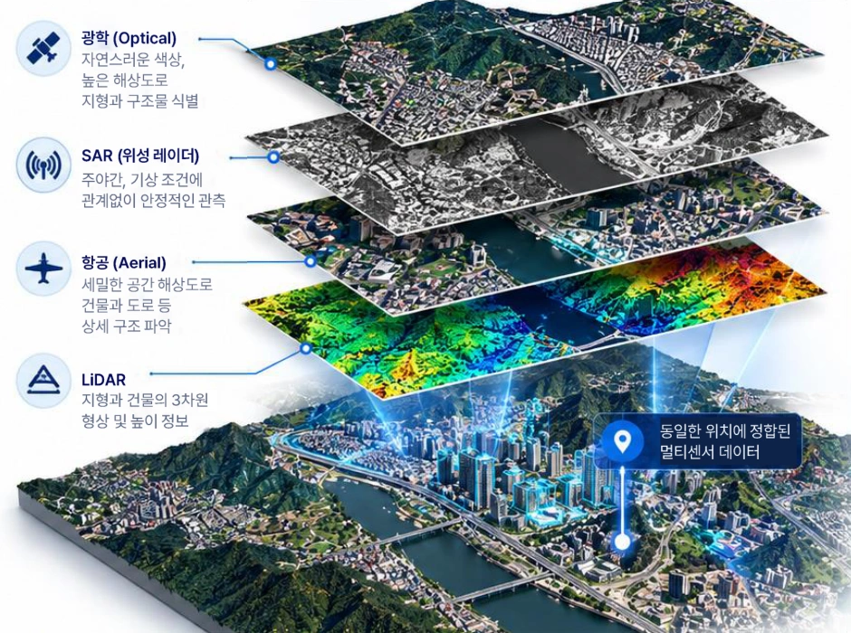
PHYSICAL WORLD ONTOLOGY
객체·위치·시간·관계를 연결해 서로 다른 데이터에 맥락을 더합니다. 현실 세계를 이해하고 판단에 활용하는 기술로 확장하고자 합니다.
SENSING INFRASTRUCTURE
항공 플랫폼 · 멀티센서 시스템 · 현장·이동형 관측 · 정밀 관측 지원
센싱 인프라 살펴보기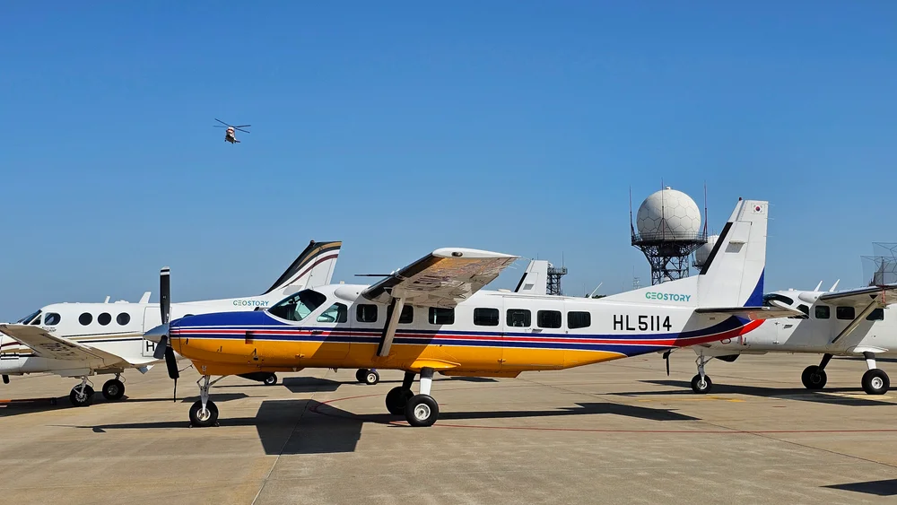
03 / APPLICATIONS
해결 과제와 기술, 고객 가치의 연결.
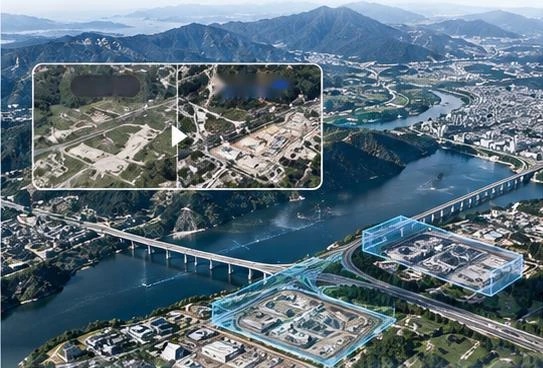
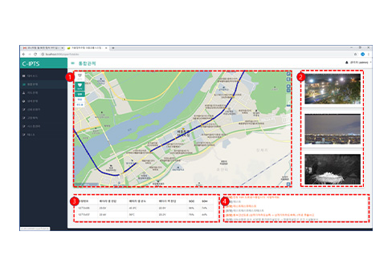
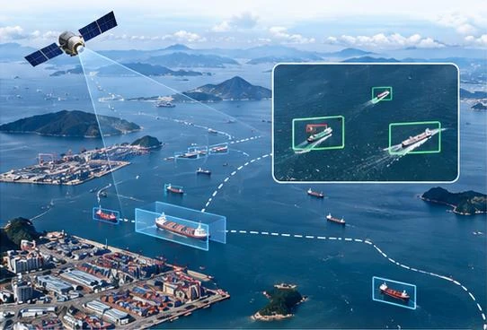
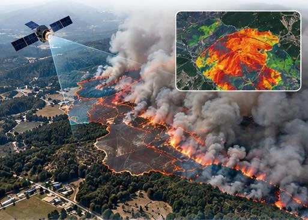
04 / PROOF OF CAPABILITY
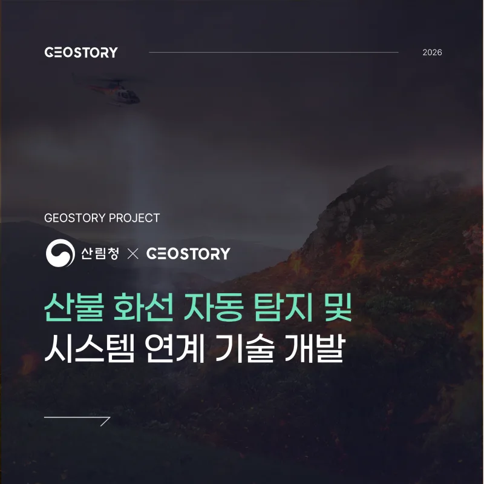
화점·화선 자동 탐지와 상황관제 연계 기술 연구.
과제·기술·수행 범위 보기 ↗ 공개 R&D 이력정밀지도와 정적 데이터 기반을 연결한 연구 수행.
과제·기술·수행 범위 보기 ↗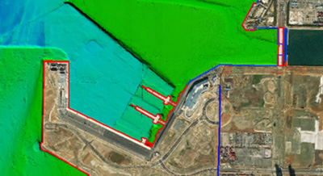
수심 센싱과 운영·처리 기술의 연구개발.
과제·기술·수행 범위 보기 ↗공개 연구·수행 자료를 기준으로 구성했습니다. 연구개발 목표와 실제 납품·운용 실적은 구분하여 안내합니다.
05 / GROWTH DIRECTION
축적한 데이터 취득·처리 역량을 바탕으로 AI 분석을 고도화하고, 지식화와 플랫폼·서비스로의 확장을 추진합니다.
사업과 성장 방향 살펴보기취득·처리·품질 역량
변화·환경·맥락의 이해
반복 활용과 업무 연결
사업 확장 방향을 설명한 내용이며, 확정된 제품 출시나 실적 전망을 의미하지 않습니다.
06 / NEWS & RESOURCES
OUR STORY
지오스토리의 출발점은 정확하고 신뢰할 수 있는 데이터입니다. 축적된 기술과 주도적인 도전과 혁신으로 새로운 사업 가치를 창출합니다.
OUR PURPOSE
현실을 정확하게 이해하는 일.
지오스토리의 모든 연결은
그곳에서 시작됩니다.
공식 기업소개에 담긴 ‘정확한 정보, 신뢰할 수 있는 서비스’를 중심으로 재구성했습니다.
MISSION / 존재 이유
하늘·땅·바다에서 얻은 원천 데이터와 가공·소프트웨어 기술을 연결해, 공공과 민간의 현장에 필요한 정보를 제공합니다.
VISION / 제안 비전
관측을 넘어 분석과 서비스로 활용을 확장하고, 모든 것이 연결된 세상에서 더 나은 의사결정을 돕는 기업을 지향합니다.
비전 문구는 공개 사업 내용을 바탕으로 정리한 검토용 제안입니다.
OUR PRINCIPLES
기업소개와 안전보건 경영방침에서
찾은 지오스토리의 일하는 원칙입니다.
원천 데이터부터 결과물까지, 활용 목적에 맞는 품질과 신뢰할 수 있는 서비스를 추구합니다.
축적된 노하우를 미래 기술과 연결합니다. 독창적인 아이디어로 고객의 문제를 바라보고 활용의 범위를 넓힙니다.
안전보건을 경영활동의 우선 원칙으로 삼고, 임직원·협력업체의 참여와 위험요인 개선을 추진합니다.
출처: 안전보건 경영방침 (2024.06.21) · 공개 자료 기준. 출처 안내
GOALS THAT CONNECT TO BUSINESS
공개 역량과 연구 이력을 바탕으로 정리한 발전 방향입니다. 확정된 경영목표나 실적 전망을 의미하지 않습니다.
성장 방향 살펴보기멀티센서 관측과 처리·품질 역량을 연결합니다.
→ 관측 및 데이터 융합 사업
분석과 AI 연구를 재난·환경의 수요와 연결합니다.
→ 분석 및 활용 분야 확장
데이터와 소프트웨어를 고객의 업무에 연결합니다.
→ 솔루션 활용 및 서비스 발전
OUR IDENTITY
기하학적인 형태로 데이터와 솔루션의 전문성을 표현한 지오스토리의 심벌. 공식 CI 색상을 사이트 전반의 시각적 기준으로 사용했습니다.
공식 CI 안내·원본 다운로드사업의 시작부터 활용까지, 지오스토리와 이야기해 보세요.
CONNECTED BUSINESS
관측, 데이터 융합, 분석, 의사결정. 개별 기술을 하나의 흐름으로 묶어 지오스토리의 사업 구조를 이해해 보세요.
INTERACTIVE VALUE CHAIN
단계를 선택하면 핵심 역량과
고객에게 전달되는 결과를 확인할 수 있습니다.
항공 영상, LiDAR, 초분광 등 서로 다른 센서가 담은 정보를 모읍니다. 관측 목적과 현장 조건에 맞춰 육상과 연안의 기초 데이터를 확보합니다.
복사·대기·기하 보정과 정합, 모델링으로 센서 데이터를 활용 가능한 형태로 가공합니다. 지형과 객체의 정보를 구조화해 분석과 소프트웨어 활용의 기반을 만듭니다.
초분광의 물질 특성과 AI 기반 분류·탐지 연구를 연결합니다. 관측 데이터를 현장의 변화와 위험을 파악하는 정보로 발전시키는 단계입니다.
OUTPUT / 03
농작물·산림·연안 등의 특성을 분류하고, 산불 화점·화선 탐지처럼 현장 대응에 필요한 분석 기술을 연구합니다.
데이터와 분석 결과를 소프트웨어 및 업무 시스템과 연결합니다. 관제, 관리, 계획과 대응의 현장에서 정보가 사용되는 흐름을 지향합니다.
OUTPUT / 04
GeoM 등 자체 솔루션과 데이터 구축 경험을 바탕으로 활용 환경에 맞는 서비스를 제공합니다. 산불 상황관제 연계는 연구개발 목표입니다.
CAPABILITY → DELIVERABLE → USE
01 / SENSING
항공 영상, LiDAR, 초분광 등 서로 다른 센서가 담은 정보를 모읍니다. 관측 목적과 현장 조건에 맞춰 육상과 연안의 기초 데이터를 확보합니다.
형상·높이·분광 특성이 담긴 데이터를 확보하고, 활용 목적에 맞는 후속 처리로 연결합니다.
고객의 활용으로 이어 보기02 / DATA FUSION
복사·대기·기하 보정과 정합, 모델링으로 센서 데이터를 활용 가능한 형태로 가공합니다. 지형과 객체의 정보를 구조화해 분석과 소프트웨어 활용의 기반을 만듭니다.
정사영상, 수치표고자료, 3차원 모델 등 고객의 활용 환경에 맞는 성과물로 연결합니다.
고객의 활용으로 이어 보기03 / ANALYTICS
초분광의 물질 특성과 AI 기반 분류·탐지 연구를 연결합니다. 관측 데이터를 현장의 변화와 위험을 파악하는 정보로 발전시키는 단계입니다.
농작물·산림·연안 등의 특성을 분류하고, 산불 화점·화선 탐지처럼 현장 대응에 필요한 분석 기술을 연구합니다.
고객의 활용으로 이어 보기04 / DECISION
데이터와 분석 결과를 소프트웨어 및 업무 시스템과 연결합니다. 관제, 관리, 계획과 대응의 현장에서 정보가 사용되는 흐름을 지향합니다.
GeoM 등 자체 솔루션과 데이터 구축 경험을 바탕으로 활용 환경에 맞는 서비스를 제공합니다. 산불 상황관제 연계는 연구개발 목표입니다.
고객의 활용으로 이어 보기WHY CONNECTION MATTERS
센서와 처리 기술은 특정 장비에 머무르지 않습니다. 재난의 위험, 환경의 상태, 도시의 형상과 연안의 변화를 이해하는 데이터 기반으로 이어집니다.
형상·높이·분광의 서로 다른 정보
데이터 생산부터 솔루션까지
재난·환경·모빌리티·해양
TECHNOLOGY FOUNDATION
장비와 제품은 사업의 목적을
실현하는 기술 기반으로 소개합니다.
출처: 공식 사업·솔루션 소개 · 공개 자료 기준. 출처 안내
사업의 시작부터 활용까지, 지오스토리와 이야기해 보세요.
SENSING INFRASTRUCTURE
항공 플랫폼과 다중센서 시스템, 현장 관측과 정밀 지원 기반. 지오스토리의 데이터 역량을 뒷받침하는 센싱 인프라를 소개합니다.
THE FOUNDATION OF INTELLIGENCE
관측 목적과 환경에 맞는 플랫폼·센서를 연결하고, 취득한 데이터를 융합·분석과 고객의 활용으로 이어갑니다.
AIRBORNE PLATFORMS
항공 센서를 탑재해 넓은 지역의 데이터를 취득하는 운용 기반입니다.
연결되는 데이터
광역 항공 관측 · 센서 탑재 · 데이터 취득
센서의 관측 범위를 넓히는 항공 플랫폼
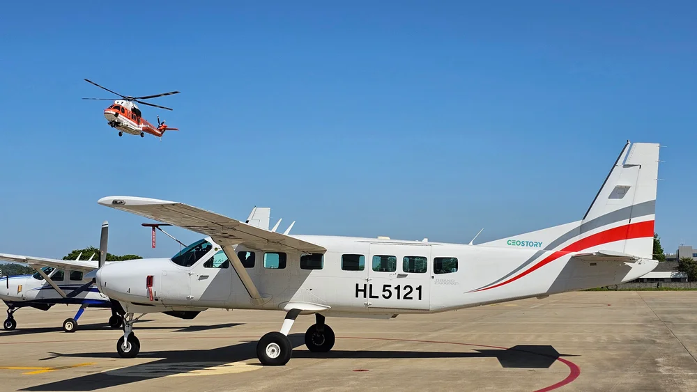
센서의 관측 범위를 넓히는 항공 플랫폼
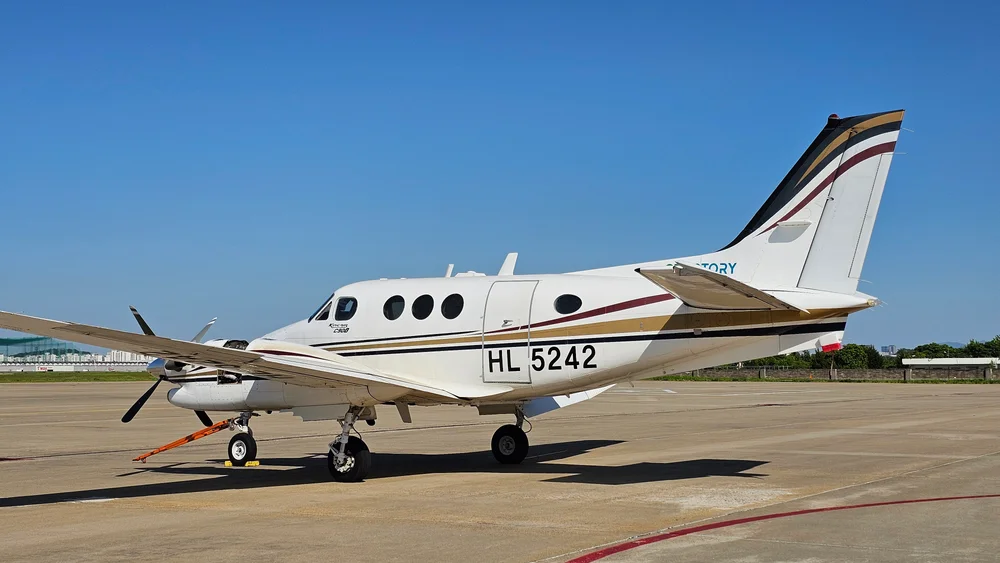
센서의 관측 범위를 넓히는 항공 플랫폼
MULTI-SENSOR SYSTEMS
영상·형상·분광·수심 등 서로 다른 특성의 데이터를 확보하는 센싱 기반입니다.
연결되는 데이터
고해상도 영상 · 3차원 형상 · 분광 정보 · 연안 지형
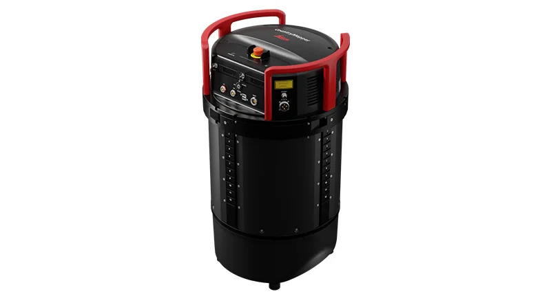
지형과 객체의 형상·높이를 담는 관측
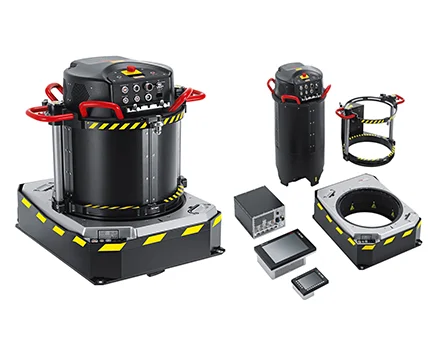
지형과 객체의 형상·높이를 담는 관측
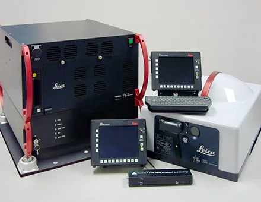
지형과 객체의 형상·높이를 담는 관측
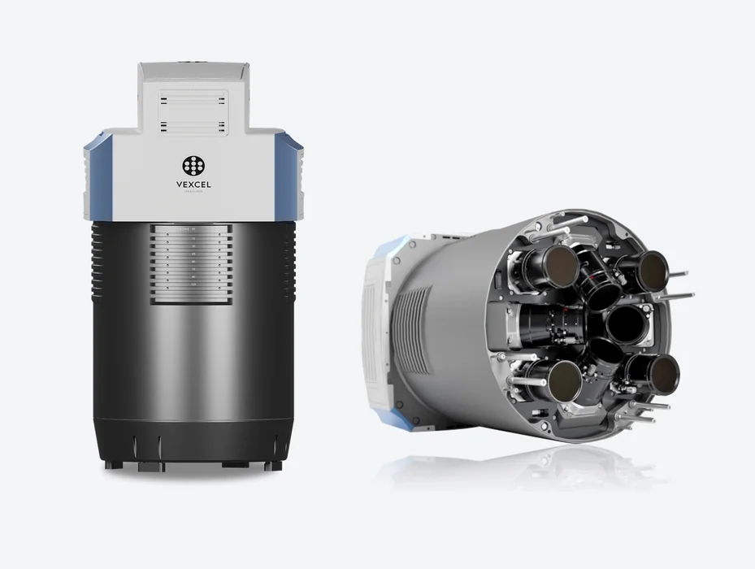
정사영상과 3D 데이터의 출발점
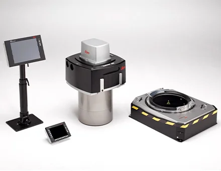
정사영상과 3D 데이터의 출발점
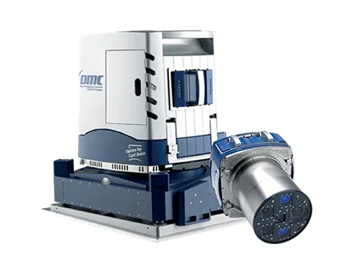
정사영상과 3D 데이터의 출발점
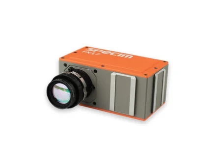
물질과 환경의 분광 특성을 읽는 관측
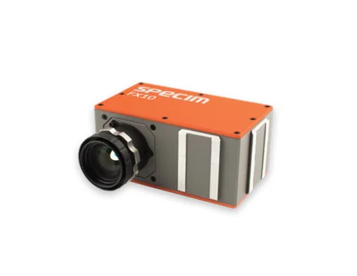
물질과 환경의 분광 특성을 읽는 관측
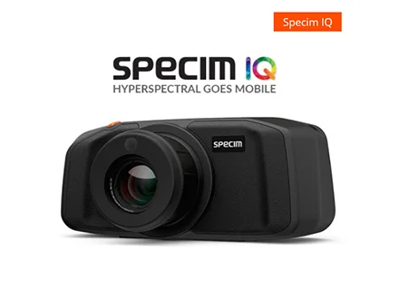
물질과 환경의 분광 특성을 읽는 관측
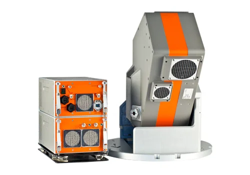
물질과 환경의 분광 특성을 읽는 관측
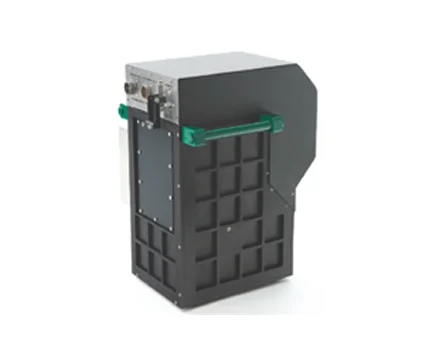
물질과 환경의 분광 특성을 읽는 관측
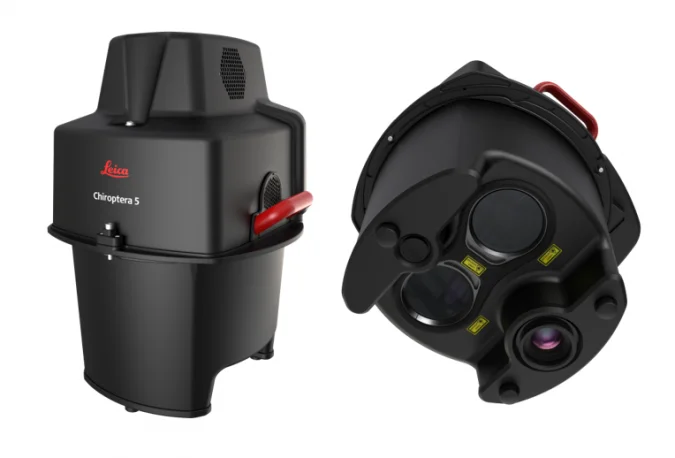
육지와 얕은 바다의 지형 데이터를 연결
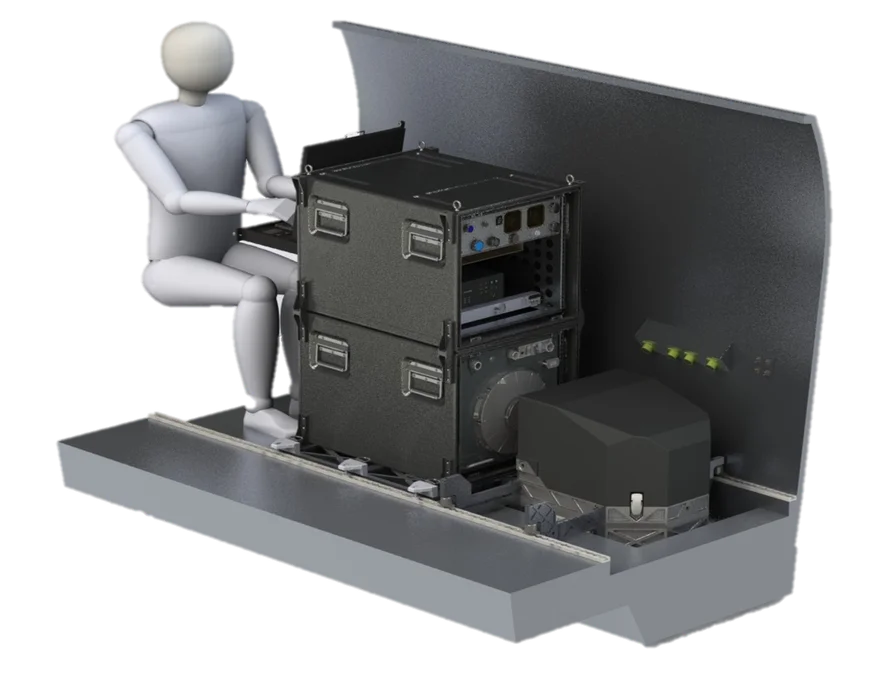
육지와 얕은 바다의 지형 데이터를 연결
MOBILE & FIELD SENSING
이동형·지상·드론 기반의 관측으로 활용 목적에 맞는 현장 데이터를 확보합니다.
연결되는 데이터
도로·시설물 데이터 · 현장 3D 기록 · 근거리 관측
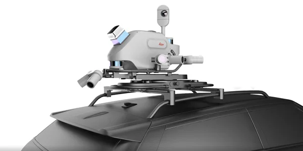
이동하며 수집하는 도로와 시설물 데이터
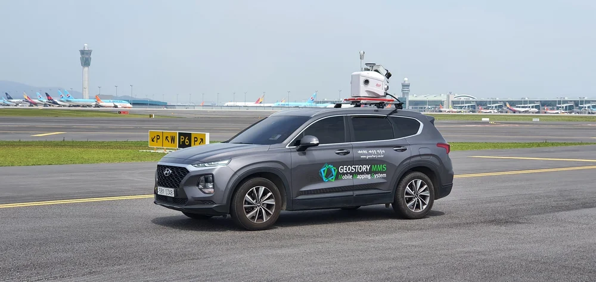
이동하며 수집하는 도로와 시설물 데이터
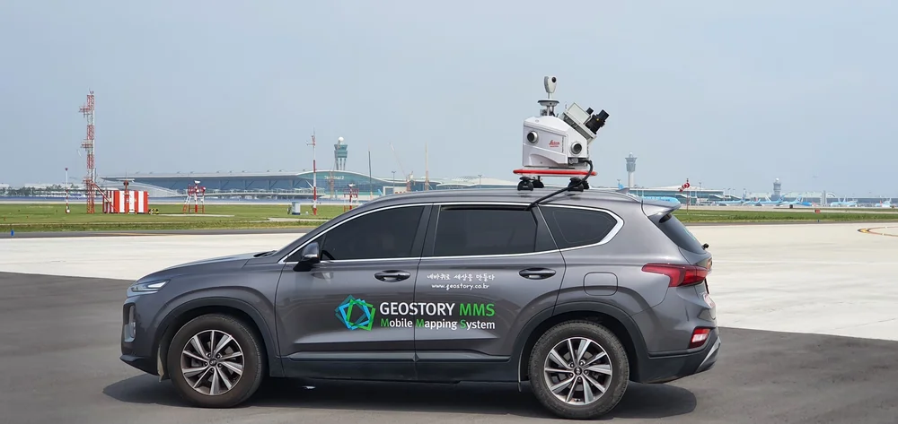
이동하며 수집하는 도로와 시설물 데이터
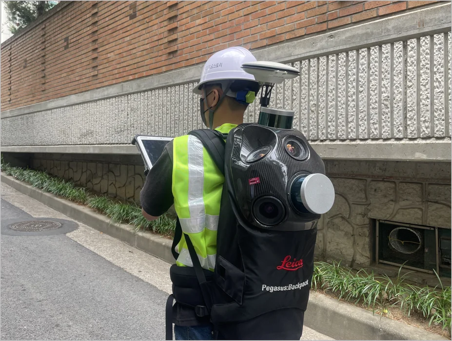
현장의 형상을 포인트 클라우드로 연결
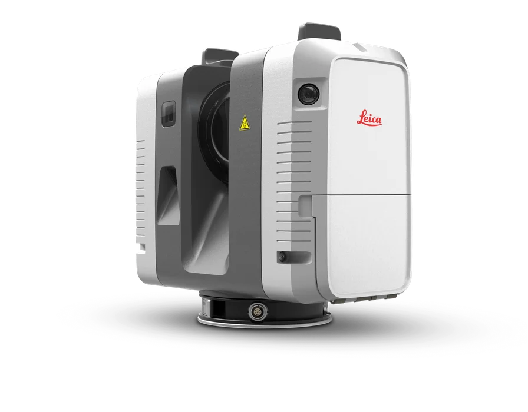
현장의 형상을 포인트 클라우드로 연결
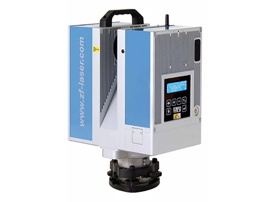
현장과 구조물을 3차원 데이터로 기록
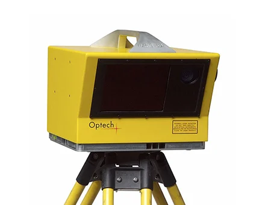
현장과 구조물을 3차원 데이터로 기록
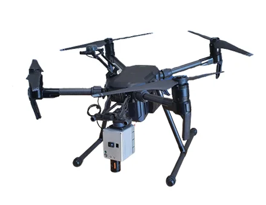
다양한 현장에 적용하는 근접 관측 플랫폼
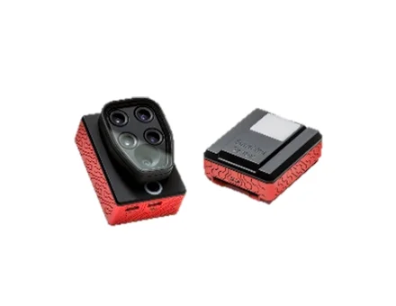
다양한 현장에 적용하는 근접 관측 플랫폼
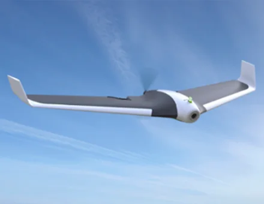
다양한 현장에 적용하는 근접 관측 플랫폼
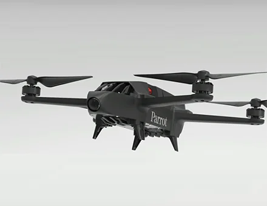
다양한 현장에 적용하는 근접 관측 플랫폼
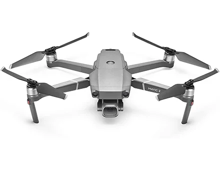
다양한 현장에 적용하는 근접 관측 플랫폼
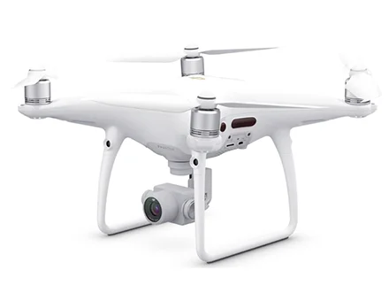
다양한 현장에 적용하는 근접 관측 플랫폼
PRECISION & VALIDATION
위치·자세 정보와 현장 분광 관측을 통해 센서 데이터의 활용 기반을 지원합니다.
연결되는 데이터
위치·자세 정보 · 현장 분광 특성
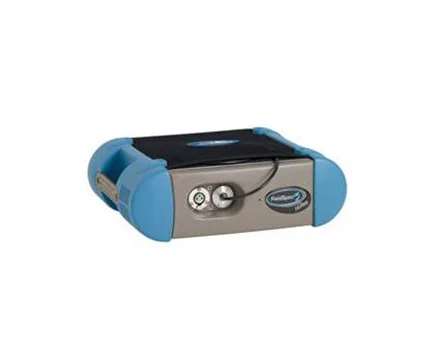
대상의 분광 특성을 현장에서 확인
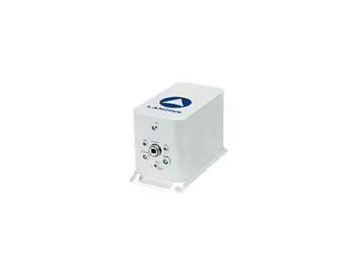
관측 데이터의 위치·자세 정보를 지원
기존 공식 홈페이지의 공개 목록을 기반으로 구성했습니다. 동일 모델의 개별 등록 항목이 포함되어 있으며, 최신 보유·운용 현황과 적용 조건은 별도 확인이 필요합니다.
확보하려는 데이터와 활용 목적을 알려주세요. 적합한 관측 방식과 기술의 연결을 함께 검토합니다.
APPLICATIONS
재난, 환경, 도시와 바다. 서로 다른 현장의 질문을 데이터로 연결합니다. 활용 분야를 선택해 관련 기술과 공개 사례를 확인하세요.
EXPLORE BY CHALLENGE
공개 사업 및 연구 이력을 바탕으로
활용 분야를 재구성했습니다.
SAFETY & RESILIENCE
산불 대응의 핵심은 현장의 변화를 제때 파악하는 일입니다. 항공 관측 경험과 화점·화선 탐지 기술 연구를 연결해 재난 대응 의사결정을 지원하는 방향으로 나아갑니다.
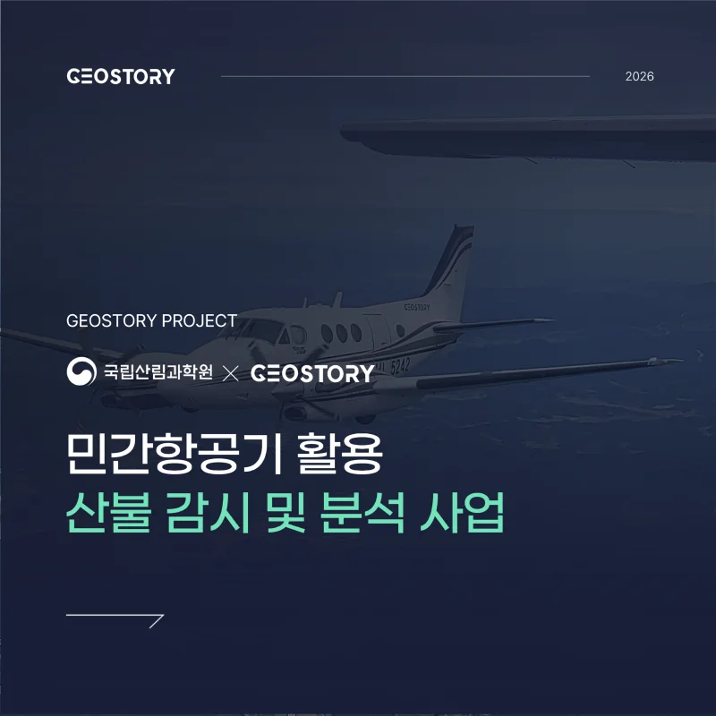
공개 사업 소개 · 산불 감시산불 현황을 신속하게 파악하고, 관측 결과를 대응 업무와 연결하려는 공공기관 및 재난 대응 조직.
2025년 산림청 공모사업에 선정된 국가 연구개발 과제입니다. 지오스토리는 주관연구기관으로 참여하며, 공개 공지상 수행 예정 기간은 2025년 7월~2029년 12월입니다.
공식 공개자료 확인CLIMATE & ENVIRONMENT
초분광 영상은 다양한 파장에 담긴 정보를 활용합니다. 보정·분류 기술과 결합해 산림, 농업, 연안 환경을 이해하고 관리하는 데이터 기반을 제공합니다.
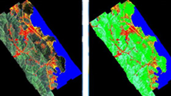
공식 활용 예시 · 초분광산림 피해, 농작물 분포, 연안의 특성 등 현장 상태를 데이터로 이해하려는 환경·산림·농업 관련 기관과 기업.
공식 R&D 페이지에 공개된 참여 연구 이력입니다. 2017~2021년 연구에서 국내 블루카본 현황과 국가 통계 구축을 위한 기술 개발을 추진했습니다.
공식 공개자료 확인CITY & MOBILITY
항공 영상, MMS, 3차원 모델링으로 도로와 도시를 데이터로 연결합니다. 정밀한 지도와 3D 데이터를 구축해 관리와 자율협력주행 연구의 기반을 만듭니다.
시설과 도로의 디지털 기반을 구축하거나, 정밀지도 데이터를 자율주행 지원 및 관리 업무에 활용하려는 기관과 기업.
2018~2021년 자율주행기반 대중교통시스템 실증 연구의 위탁연구개발과제로 공개된 이력입니다. 자율협력주행에 필요한 정적 DB를 구축했습니다.
공식 공개자료 확인OCEAN & COAST
항공수심 LiDAR를 활용해 선박 접근이 어려운 얕은 수심과 연안의 지형 데이터를 확보합니다. 육역과 연안의 정보를 연결해 해안선과 해저지형을 이해하는 기반을 만듭니다.
얕은 수심의 해저지형, 해안선 변화와 갯골을 파악하고 연안 관리 자료를 확보하려는 해양·수자원 관련 기관.
2014~2020년 수행된 공개 R&D 이력입니다. 지오스토리가 참여해 항공수심측량 장비와 설계·운영·처리 소프트웨어, 현장검증 기술 개발을 추진했습니다.
공식 공개자료 확인필요한 데이터와 활용 목적부터 함께 이야기하겠습니다.
PROJECTS & RESEARCH
공개 자료에서 확인할 수 있는 대표 연구·수행 이력을 살펴보세요.
2025년 산림청 공모사업에 선정된 국가 연구개발 과제입니다. 지오스토리는 주관연구기관으로 참여하며, 공개 공지상 수행 예정 기간은 2025년 7월~2029년 12월입니다.
고객 과제·기술·사례 보기2018~2021년 자율주행기반 대중교통시스템 실증 연구의 위탁연구개발과제로 공개된 이력입니다. 자율협력주행에 필요한 정적 DB를 구축했습니다.
고객 과제·기술·사례 보기2014~2020년 수행된 공개 R&D 이력입니다. 지오스토리가 참여해 항공수심측량 장비와 설계·운영·처리 소프트웨어, 현장검증 기술 개발을 추진했습니다.
고객 과제·기술·사례 보기사업의 시작부터 활용까지, 지오스토리와 이야기해 보세요.
INVESTOR STORY
관측의 기반이 데이터와 분석으로, 다시 현장의 활용으로 확장되는 구조. 지오스토리를 이해하는 세 가지 관점을 제안합니다.
THE INVESTMENT NARRATIVE
개별 장비보다 전 과정의 역량을, 기술 보유보다 실제 활용의 맥락을 살펴보세요. 아래 내용은 공개 역량을 연결한 사업 해석입니다.
데이터의 생산·가공과 자체 소프트웨어를 함께 보유한 사업 구조. 고객의 활용 목적에 맞춰 기술을 연결할 수 있는 기반입니다.
사업 구조 확인관측과 데이터 처리 역량은 재난, 환경, 도시·모빌리티, 해양 등 서로 다른 현장에서 활용됩니다.
활용 분야 확인초분광과 AI, 산불 화선 탐지 및 관제 연계 연구. 축적된 사업 경험이 새로운 활용 기술로 발전하는 과정을 봅니다.
공개 연구 사례 확인DIRECTION OF GROWTH
각 방향을 선택해
사업과의 연결을 살펴보세요.
육상·해양 데이터 구축 경험과 멀티센서 역량을 고객의 활용 목적에 맞춰 연결하는 방향입니다.
FOCUS / 주요 검토 과제
초분광 분석과 AI 연구를 재난·환경 등 실제 수요와 연결하고, 연구 성과의 적용 가능성을 검증하는 방향입니다.
FOCUS / 주요 검토 과제
자체 소프트웨어와 데이터 구축 경험을 고객의 업무에 연결해 지속적으로 활용되는 구조로 발전시키는 방향입니다.
FOCUS / 주요 검토 과제
공개 사업·연구 이력을 바탕으로 정리한 발전 방향 제안입니다. 확정 경영계획, 매출 전망, 투자수익 또는 상장 일정을 의미하지 않습니다.
PUBLIC EVIDENCE
연구의 목표, 수행 이력, 사업 참여 사실을 구분합니다. 원문으로 이동해 각각의 맥락을 확인할 수 있습니다.
출처 전체 보기2012
2012년 7월 30일 설립. 데이터 생산부터 가공·솔루션 개발까지 사업 역량을 축적했습니다.
PUBLIC R&D HISTORY
항공수심장비, 자율협력주행용 HD Map, 초분광·AI 토지분류 등 공식 R&D 페이지에 공개된 연구 이력입니다.
2025.07 – 2029.12 / 예정
2026년 4월 공식 공지에 따르면 국가 연구개발 과제의 주관연구기관으로 수행 중입니다.
2026.04 / 공개 공지
국립산림과학원이 추진하는 산불 감시 및 분석 사업의 수행사로 참여한다고 공지했습니다.
RESOURCES & QUESTIONS
공식 자료실 · 2026.04.23 게시
투자 및 사업 협력 문의는 회사 공식 연락처로 연결됩니다.
INSIGHTS & RESOURCES
사업 소식, 연구개발, 기업 자료를 한곳에서 살펴보세요. 모든 콘텐츠는 공식 홈페이지의 공개 원문과 연결됩니다.
항공 관측 경험을 산불 초기 대응과 현황 분석에 연결하는 사업을 소개합니다.
공식 원문 보기산림청 국가 연구개발 과제의 목표와 연구 방향을 확인하세요.
공식 원문 보기지오스토리 공식 홈페이지에 공개된 기업 소개 브로셔입니다.
공식 원문 보기초분광 UAV 영상과 AI를 활용한 토지피복 분류 연구를 살펴봅니다.
공식 원문 보기공식 홈페이지에서 확인한 공개 콘텐츠를 선별했습니다. 전체 공지는 공식 News 에서 확인할 수 있습니다.
사업의 시작부터 활용까지, 지오스토리와 이야기해 보세요.
LET’S CONNECT
필요한 데이터, 해결하려는 문제, 사업과 투자에 관한 질문을 나눠 주세요. 회사 공식 연락처와 문의 준비 기능을 제공합니다.
CONTACT GEOSTORY
공식 홈페이지에 안내된 대표번호입니다.
주소 · 서울특별시 강서구 화곡로68길 82,
406–408호 (등촌동, 강서IT밸리)
주소는 기존 공식 홈페이지 표기 기준입니다.
방문 전 회사에 현재 위치를 확인해 주세요.
EQUIPMENT & INFRASTRUCTURE
사업의 연결을 실현하는 관측 인프라를 살펴보세요. 장비 분류를 선택하거나 모델명을 검색하면 사진과 공개 제원을 확인할 수 있습니다.
THE FOUNDATION OF SENSING
항공기, LiDAR, 디지털카메라, 초분광과 드론.
목적에 맞는 관측에서 데이터 가공과 활용까지 연결합니다.
USA CESSNA
센서의 관측 범위를 넓히는 항공 플랫폼
USA CESSNA
센서의 관측 범위를 넓히는 항공 플랫폼
USA Beechcraft
센서의 관측 범위를 넓히는 항공 플랫폼
Leica Geosystem
이동하며 수집하는 도로와 시설물 데이터
Leica Geosystem
이동하며 수집하는 도로와 시설물 데이터
Leica Geosystem
이동하며 수집하는 도로와 시설물 데이터
Leica Geosystem
지형과 객체의 형상·높이를 담는 관측
Leica Geosystem
지형과 객체의 형상·높이를 담는 관측
Leica Geosystem
지형과 객체의 형상·높이를 담는 관측
Vexcel Imaging
정사영상과 3D 데이터의 출발점
Leica Geosystem
정사영상과 3D 데이터의 출발점
Z/I Imaging
정사영상과 3D 데이터의 출발점
SPECIM
물질과 환경의 분광 특성을 읽는 관측
SPECIM
물질과 환경의 분광 특성을 읽는 관측
SPECIM
물질과 환경의 분광 특성을 읽는 관측
SPECIM
물질과 환경의 분광 특성을 읽는 관측
Itres
물질과 환경의 분광 특성을 읽는 관측
Leica Geosystem
현장의 형상을 포인트 클라우드로 연결
Leica Geosystem
현장의 형상을 포인트 클라우드로 연결
Leica Geosystems
육지와 얕은 바다의 지형 데이터를 연결
지오스토리(해양수산부 연구과제 개발성과)
육지와 얕은 바다의 지형 데이터를 연결
ASD
대상의 분광 특성을 현장에서 확인
Z+F
현장과 구조물을 3차원 데이터로 기록
Optech
현장과 구조물을 3차원 데이터로 기록
IXSEA
관측 데이터의 위치·자세 정보를 지원
CORNING
다양한 현장에 적용하는 근접 관측 플랫폼
Parrot
다양한 현장에 적용하는 근접 관측 플랫폼
Parrot
다양한 현장에 적용하는 근접 관측 플랫폼
Parrot
다양한 현장에 적용하는 근접 관측 플랫폼
DJI
다양한 현장에 적용하는 근접 관측 플랫폼
DJI
다양한 현장에 적용하는 근접 관측 플랫폼
기존 공식 홈페이지의 장비 목록과 제원에 기반했습니다. 동일 모델의 개별 등록 항목을 포함하며, 현재 가용 장비와 운용 조건은 문의해 주세요. 공식 장비 목록
장비의 종류보다 먼저, 관측 목적과 활용 환경을 함께 살펴보겠습니다.
CAREERS AT GEOSTORY
미래를 향한 도전, 긍정적인 생각, 맡은 일에 최선을 다하는 태도. 지오스토리와 함께 기술과 현장을 연결할 동료를 기다립니다.
PEOPLE WHO CONNECT
새로운 기술과 현장의 질문을 마주하고, 더 나은 방법을 고민하는 사람.
가능성을 찾는 시선으로 동료와 소통하며, 문제 해결에 함께 참여하는 사람.
맡은 역할의 의미를 이해하고, 정확한 결과와 신뢰할 수 있는 서비스를 위해 노력하는 사람.
BENEFITS & SUPPORT
공식 인재채용 페이지에 안내된
인사·복지제도를 정리했습니다.
4대보험과 퇴직연금 제도를 운영합니다.
연차·하계휴가, 출산 관련 휴가와 육아휴직 등 휴가제도를 안내하고 있습니다.
경조휴가와 경조사비, 우수사원·장기근속자 포상제도를 운영합니다.
출장 수당과 야근식대, 업무 택시비 등을 지원합니다.
업무 관련 자기계발비와 교육을 지원합니다.
부서 단합 활동, 전사 워크샵과 리조트 시설 이용 등을 안내하고 있습니다.
지원 대상과 적용 범위 등 세부 운영 기준은 회사 규정 및 채용 담당자 안내를 기준으로 확인해 주세요.
HIRING PROCESS
지원서와 경력·역량을 검토합니다.
직무 경험과 업무 역량을 이야기합니다.
함께할 방향과 가능성을 살펴봅니다.
최종 결과와 입사 관련 사항을 안내합니다.
공식 홈페이지에 안내된 기본 채용 절차입니다. 실제 전형과 일정은 개별 채용공고 및 회사 안내를 확인해 주세요.
출처: 공식 인재채용·복리후생 안내 · 공개 자료 기준. 출처 안내
JOB OPPORTUNITIES
공식 채용공고와 지원 안내를 확인해 주세요. 모집 분야와 지원 요건, 접수 일정은 각 공고 및 채용 담당자의 안내를 기준으로 합니다.
RECRUITMENT NOTICES
기존 공식 채용 게시판에 공개된 공고입니다. 현재 접수 중임을 의미하지 않으며, 최신 모집 분야와 지원 가능 여부는 공고 원문 또는 채용 담당자에게 확인해 주세요.
공식 홈페이지 확인일: 2026.10.14. 공고의 게시일과 현재 접수 상태는 구분해 안내합니다.
CONTENT REFERENCES
기존 공식 홈페이지를 바탕으로 사업 구조와 화면을 재구성했습니다. 검증된 공개 사실은 원문과 연결하고, 새로 정리한 비전과 성장 방향은 제안으로 표시했습니다.
EDITORIAL BASIS
회사 개요, CI, 사업 역량, 공개 R&D 및 공지 내용은 기존 공식 홈페이지를 참조했습니다.
‘관측 → 데이터 융합 → 분석 → 의사결정’은 사업을 이해하기 쉽게 재구성한 탐색 체계입니다.
비전 문구, 정성 목표와 성장 방향은 검토용 제안입니다. 확정 경영방침·경영계획과 구분합니다.
회사명, 설립일, 대표이사, 대표번호, 데이터 생산·가공·솔루션 역량
원문 보기안전보건 최우선, 참여와 협의, 위험요인 개선 등 공개 방침
원문 보기공식 로고와 브랜드 색상, CI 설명
원문 보기사업 종류와 자체 소프트웨어 명칭
원문 보기보정 절차, 농업·산림·기름유출·연안 활용 예시
원문 보기연안 지형과 수심 데이터, 해안선 조사 등 활용
원문 보기항공수심장비, 블루카본, HD Map, 초분광·AI 등 연구 이력
원문 보기2026.04.21 공개 사업 참여 공지
원문 보기주관연구기관, 목표 및 공개 수행 예정 기간
원문 보기2026.04.23 게시된 공식 자료실 페이지
원문 보기11개 분류의 공개 장비 목록·사진과 개별 상세 제원
원문 보기인재상, 전형 절차, 복리후생, 지원 방법·양식 및 채용 연락처
원문 보기공식 게시 공고와 게시일, 원문 및 공고에 연결된 채용 페이지
원문 보기사업의 시작부터 활용까지, 지오스토리와 이야기해 보세요.
PAGE NOT FOUND
메뉴에서 다른 이야기를 살펴보거나 홈페이지로 돌아가 주세요.
항공기 · 센서의 관측 범위를 넓히는 항공 플랫폼
| 제조사 | USA CESSNA |
|---|---|
| 종류 | 비행기 육상단발 |
| 활용 | 디지털 항공사진측량 하이퍼스펙트럴 촬영 항공레이저측량 항공수심측량 |
공식 홈페이지에 공개된 제원 기준입니다. 항공기 운용 제원은 별도 문의해 주세요.
항공기 · 센서의 관측 범위를 넓히는 항공 플랫폼
| 제조사 | USA CESSNA |
|---|---|
| 종류 | 비행기 육상단발 |
| 활용 | 디지털 항공사진측량 하이퍼스펙트럴 촬영 항공레이저측량 항공수심측량 |
공식 홈페이지에 공개된 제원 기준입니다. 항공기 운용 제원은 별도 문의해 주세요.
항공기 · 센서의 관측 범위를 넓히는 항공 플랫폼
| 제조사 | USA Beechcraft |
|---|---|
| 종류 | 비행기 육상다발 |
| 활용 | 디지털 항공사진측량 하이퍼스펙트럴 촬영 항공레이저측량 항공수심측량 |
공식 홈페이지에 공개된 제원 기준입니다. 항공기 운용 제원은 별도 문의해 주세요.
MMS · 이동하며 수집하는 도로와 시설물 데이터
| 제조사 | Leica Geosystem |
|---|---|
| 360° 파노라마 카메라 | - SmartFusion 기술 24MP - 보정된 색상 |
| 스캐너 | - TOF 방식 라이다 100만 point/s - 최대 490m |
| 카메라 | - 측면 카메라 - 도로포장용 카메라 - 전면카메라 |
| 정밀도 | 0.003m |
| 포지셔닝 | - GNSS 내장형, 최상위 등급 IMU - SLAM 스캐너 |
| 운행속도 | 최대 130km/h |
공식 홈페이지에 공개된 제원 기준입니다. 운영 조건과 장비 구성에 따라 적용 범위가 달라질 수 있습니다.
MMS · 이동하며 수집하는 도로와 시설물 데이터
| 제조사 | Leica Geosystem |
|---|---|
| 최대 측정거리 | 100m |
| LiDAR 센서 | 1대 (센서당 1,000,000points/sec) |
| 측정 각도 | 360º |
| 스캔속도 | Up to 1M pts/sec |
| 카메라 | 6대 X 12 M pixel(8fps) |
| 데이터 용량 | 43GB/h or 1.1GB/km |
| 정확도 | 수평정확도 : 0.020 m RMS 수직정확도 : 0.015 m RMS |
공식 홈페이지에 공개된 제원 기준입니다. 운영 조건과 장비 구성에 따라 적용 범위가 달라질 수 있습니다.
MMS · 이동하며 수집하는 도로와 시설물 데이터
| 제조사 | Leica Geosystem |
|---|---|
| 최대 측정거리 | 100m |
| LiDAR 센서 | 1대 (센서당 1,000,000 points/sec) |
| 측정 각도 | 360º |
| 스캔속도 | Up to 1M pts/sec |
| 카메라 | 7대 X 4 M pixel(8fps) |
| 데이터 용량 | 43GB/h or 1.1GB/km |
| 정확도 | 수평정확도 : 0.020 m RMS 수직정확도 : 0.015 m RMS |
공식 홈페이지에 공개된 제원 기준입니다. 운영 조건과 장비 구성에 따라 적용 범위가 달라질 수 있습니다.
항공 LiDAR · 지형과 객체의 형상·높이를 담는 관측
| 제조사 | Leica Geosystem |
|---|---|
| 성능 | 이미지 해상도 : 31,520×13,440px 카메라 시야각(FOV) : 58.0° LiDAR 시야각 공통 : 10°~60° GSD(지면 해상도) : 고도에 따라 2~15cm 조절 가능 LiDAR 점밀도 : 최대 6000pts/m² 가능 운영고도 : 최소 300m ~ 최대 6,000m AGL |
| 활용 | 고정밀 정사영상(orthoimage) 제작 산림 모니터링 인프라 관리 등 다양한 분야에 적용 가능 |
공식 홈페이지에 공개된 제원 기준입니다. 운영 조건과 장비 구성에 따라 적용 범위가 달라질 수 있습니다.
항공 LiDAR · 지형과 객체의 형상·높이를 담는 관측
| 제조사 | Leica Geosystem |
|---|---|
| 성능 | 레이저펄스반사빈도: Max 2,000kHz(2 MHz) 스캔빈도 : Max 300Hz 비행고도 : 300m AGL ~ 5,500m AGL 주사각 : Max 40° Full Waveform Module 탑재 최대 35개(MPIA Zone) 레이저펄스 동시 처리 |
| 활용 | DSM/DEM 3차원 고정밀 수치표면/표고자료 제작 3차원 모델링, 국토 및 도시계획, 조경분야 송전선로, 철도 및 도로 등 기반시설 계획 및 유지관리 홍수재해, 해안 및 하천관리, 산림 및 자원관리 분야 3차원 디지털 트윈, 스마트시티 구축 활용 분야 |
공식 홈페이지에 공개된 제원 기준입니다. 운영 조건과 장비 구성에 따라 적용 범위가 달라질 수 있습니다.
항공 LiDAR · 지형과 객체의 형상·높이를 담는 관측
| 제조사 | Leica Geosystem |
|---|---|
| 성능 | 레이저펄스반사 빈도 : 150kHz 스캔 빈도 : 90Hz 비행 고도 : 200~6,000m 주사각 : 75° |
| 활용 | DSM/DEM 3차원 고정밀 수치표면/표고자료 제작 3차원 모델링, 국토 및 도시계획, 조경분야 송전선로, 철도 및 도로 등 기반시설 계획 및 유지관리 홍수재해, 해안 및 하천관리, 산림 및 자원관리 분야 3차원 디지털 트윈, 스마트시티 구축 활용 분야 |
공식 홈페이지에 공개된 제원 기준입니다. 운영 조건과 장비 구성에 따라 적용 범위가 달라질 수 있습니다.
디지털카메라 · 정사영상과 3D 데이터의 출발점
| 제조사 | Vexcel Imaging |
|---|---|
| 특징 | - 3차원 데이터 취득 - 단 한번의 촬영으로 경사사진 과 수직사진 취득 - 시간단축 효율성 극대화 - 음영지역 최소화 |
공식 홈페이지에 공개된 제원 기준입니다. 운영 조건과 장비 구성에 따라 적용 범위가 달라질 수 있습니다.
디지털카메라 · 정사영상과 3D 데이터의 출발점
| 제조사 | Leica Geosystem |
|---|---|
| 성능 | 초점거리 : 92mm 센서크기 : 25,728 x 14,592 픽셀크기 : 3.9μm 센서 : CMOS 방사해상도 : 14bit 촬영고도(10cm) : 2,360m |
| 활용 | 고해상도 항공사진촬영 정사영상 제작 항공사진 판독 임상도 제작 재해 재난 관리 디지털트윈의 기반자료 |
공식 홈페이지에 공개된 제원 기준입니다. 운영 조건과 장비 구성에 따라 적용 범위가 달라질 수 있습니다.
디지털카메라 · 정사영상과 3D 데이터의 출발점
| 제조사 | Z/I Imaging |
|---|---|
| 성능 | 화소크기 : 12㎛ 초점거리 : 120mm 이미지크기 : 가로 7,680 세로 13,824 GSD (1,000m) : 10cm |
| 활용 | 고해상도 컬러 영상 획득을 통한 지형공간정보 구축 공간정보 시스템의 기본 자료 구축 등 |
공식 홈페이지에 공개된 제원 기준입니다. 운영 조건과 장비 구성에 따라 적용 범위가 달라질 수 있습니다.
초분광 · 물질과 환경의 분광 특성을 읽는 관측
| 제조사 | SPECIM |
|---|---|
| 파장대역 | 900-1700nm |
| 밴드 수 | 224 |
| 분광해상도 | 8nm |
| 공간해상도 | 640px |
| 무게 | 1.56kg |
| 크기 | 150x85x75mm |
공식 홈페이지에 공개된 제원 기준입니다. 운영 조건과 장비 구성에 따라 적용 범위가 달라질 수 있습니다.
초분광 · 물질과 환경의 분광 특성을 읽는 관측
| 제조사 | SPECIM |
|---|---|
| 파장대역 | 400-1000nm |
| 밴드 수 | 224 |
| 분광해상도 | 5.5nm |
| 공간해상도 | 1024px |
| 무게 | 1.26kg |
| 크기 | 150x85x71mm |
공식 홈페이지에 공개된 제원 기준입니다. 운영 조건과 장비 구성에 따라 적용 범위가 달라질 수 있습니다.
초분광 · 물질과 환경의 분광 특성을 읽는 관측
| 제조사 | SPECIM |
|---|---|
| 종류 | 모바일 초분광 |
| 크기/무게 | 207x91x74mm / 1.3kg |
| 성능 | 파장대역 : 400-1000nm 밴드 수 : 204 분광해상도 : 7nm 공간해상도 : 512pix |
공식 홈페이지에 공개된 제원 기준입니다. 운영 조건과 장비 구성에 따라 적용 범위가 달라질 수 있습니다.
초분광 · 물질과 환경의 분광 특성을 읽는 관측
| 제조사 | SPECIM |
|---|---|
| 파장대역 | 380nm~2,500nm |
| 밴드 수 | 최대604밴드 VNIR(380~1,000):최대348밴드 SWIR(1,000~2,500):최대256밴드 |
| 공간해상도 | 1,024pix |
| 센서 | CMOS(VNIR) + MCT(SWIR) |
공식 홈페이지에 공개된 제원 기준입니다. 운영 조건과 장비 구성에 따라 적용 범위가 달라질 수 있습니다.
초분광 · 물질과 환경의 분광 특성을 읽는 관측
| 제조사 | Itres |
|---|---|
| 성능 | VNIR (Visible Near Infrared) : 0.38~1.05 microns 최대 288개의 분광채널 40˚ FOV, 1500 Spatial Imaging Channels 공간해상도 : 0.3m ~ 2m 분광해상도 : 2.4nm~9.6nm 방사분해력 : 14-bit(16,384:1) 픽셀사이즈 : 20× 20micron |
| 활용 | 식생분류/수종분류/피복분류 녹색,엽록소,수분,광학지수를 종합한 건강지수 산출 병충해 탐지 및 산림유해환경 분석 녹조 및 원유 유출, 플랑크톤, 토사부유물, 클로로필 탐지 등 |
공식 홈페이지에 공개된 제원 기준입니다. 운영 조건과 장비 구성에 따라 적용 범위가 달라질 수 있습니다.
지상 LiDAR · 현장의 형상을 포인트 클라우드로 연결
| 제조사 | Leica Geosystem |
|---|---|
| 종류 | 이동형 지상라이다 |
| 성능 | 데이터 취득속도 : 600,000포인트/초 취득거리 : 70M 카메라 : 4백만화소x5대 촬영각도 : 360°(수평)/200°(수직) |
공식 홈페이지에 공개된 제원 기준입니다. 운영 조건과 장비 구성에 따라 적용 범위가 달라질 수 있습니다.
지상 LiDAR · 현장의 형상을 포인트 클라우드로 연결
| 제조사 | Leica Geosystem |
|---|---|
| 종류 | 고정형 지상라이다 |
| 성능 | 데이터 취득속도 : 2,000,000포인트/초 취득거리 : 130M 취득시간 : 2분이내 점군, 파노라마 이미지취득 VIS를 이용한 실시간 자동정합 촬영각도 : 360°(수평)/300°(수직) |
공식 홈페이지에 공개된 제원 기준입니다. 운영 조건과 장비 구성에 따라 적용 범위가 달라질 수 있습니다.
항공수심측량장비 · 육지와 얕은 바다의 지형 데이터를 연결
| 제조사 | Leica Geosystems |
|---|---|
| 측량고도 | 400 ~ 600m |
| 최대 투과깊이 | 3.2 Kd |
| 점밀도 | 지상 12 pts/㎡ 수심 5 pts/㎡ |
| 레이저 방출 주파수 | 지상 500 ㎑ 수심 200 ㎑ |
| 레이저 종류 | Shallow Green 515nm / 1,064 nm |
| IHO 등급 | IHO Special order |
| 센서 중량 | 48 kg |
공식 홈페이지에 공개된 제원 기준입니다. 운영 조건과 장비 구성에 따라 적용 범위가 달라질 수 있습니다.
항공수심측량장비 · 육지와 얕은 바다의 지형 데이터를 연결
| 제조사 | 지오스토리(해양수산부 연구과제 개발성과) |
|---|---|
| 전체 부피 및 무게 | 부피 : 0.473㎥ 무게 : 211㎏ |
| 센서헤드 | 크기 : 44.2W x51.5D x 49.9H㎝ 부피 : 0.113㎥ 무게 : 73㎏ |
| 운영자 스테이션 | 부피 : 0.359㎥ 무게 : 138.3㎏ |
| 운영자랙 | 크기 : 53.1W x 70.1D x 48.3H ㎝ 부피 : 0.179㎥ 무게 : 76.1㎏ |
| TMS랙 | 크기 : 53.1W x 70.1D x 48.3H㎝ 부피 : 0.179㎥ 무게 : 62.2㎏ |
공식 홈페이지에 공개된 제원 기준입니다. 운영 조건과 장비 구성에 따라 적용 범위가 달라질 수 있습니다.
지상분광기 · 대상의 분광 특성을 현장에서 확인
| 제조사 | ASD |
|---|---|
| 성능 | 분광 범위 : 0.35~2.50 microns 분광해상도 : 3 nm @ 700 nm, 10 nm @ 1400/2100 nm 샘플링 간격 : 1.4 nm @ 350-1050 nm, 2 nm @ 1000-2500 nm |
| 활용 | 농작물 및 토양 연구 임업, 생태 및 식물 생리학 연구 지질학 특성 및 분석 하이퍼스펙트럴 이미지 분석 해양학 및 수질 연구 등 |
공식 홈페이지에 공개된 제원 기준입니다. 운영 조건과 장비 구성에 따라 적용 범위가 달라질 수 있습니다.
지상레이저스캐너 · 현장과 구조물을 3차원 데이터로 기록
| 제조사 | Z+F |
|---|---|
| 성능 | 스캐닝 범위: 0.4m~79m 분해범위 : 0.1mm 데이터수집 최대속도 : 1,016,727pixel/sec 빔 확산도 : 0.22mrad FOV of view V/H : 310°/360° |
| 활용 | 건축 및 문화재 보존 정밀측량 사고현장 과학적 조사측량 등 |
공식 홈페이지에 공개된 제원 기준입니다. 운영 조건과 장비 구성에 따라 적용 범위가 달라질 수 있습니다.
지상레이저스캐너 · 현장과 구조물을 3차원 데이터로 기록
| 제조사 | Optech |
|---|---|
| 성능 | 스캐닝 범위: - 3m~1,500m to an 80% target - 3m~800m to an 20% target - 3m~350m to an 4% target 레이저반복률 : 2,500 ~ 3,500Hz 정확도 범위 : 7mm@100m 원시 위치정확도: 8mm@100m 40˚ FOV |
| 활용 | 건설/엔지니어링 : 체적, 표면적 등 측정 분석 암석 붕괴 모니터링 분석 암석 노출부 변화 탐지 및 모델링 해안 부근 맵핑 및 지도제작 |
공식 홈페이지에 공개된 제원 기준입니다. 운영 조건과 장비 구성에 따라 적용 범위가 달라질 수 있습니다.
IMU · 관측 데이터의 위치·자세 정보를 지원
| 제조사 | IXSEA |
|---|---|
| 종류 | IMU(관성 측정 장치) |
| 크기/무게 | 275 x 136 x 175 mm / 4.5kg |
| 성능 | 고급 FOG 및 가속도 센서 GNSS가 다운 된 경우에도 방향 드리프트 없음 단일 GNSS 안테나 1 개만 데이터 융합을 위해 IMU, GNSS 및 DMI 사용 200Hz 실시간 데이터 1,000Hz 이벤트 마커 정확한 시간 태깅 차량이 정차 할 때 자체 교정 (zupts) 빠른 모션 초기화 실시간 사용을위한 RTK 위치 또는 후 처리 후 처리를위한 IMU 데이터 실시간 INS 출력 |
| 활용 | 모바일 매핑 시스템 도로 및 철도 측량 차량 역학 연구 터널 매핑 |
공식 홈페이지에 공개된 제원 기준입니다. 운영 조건과 장비 구성에 따라 적용 범위가 달라질 수 있습니다.
드론 · 다양한 현장에 적용하는 근접 관측 플랫폼
| 제조사 | CORNING |
|---|---|
| 종류 | 드론 초분광 |
| 크기 / 무게 | 13.7 x 8.8 x 7.1cm / 680g |
| 센서 | Push-broom Line Imaging Spectrometer |
| 감지기 | CCD/CMOS hybrid 1,408 spatial pixels |
| 성능 | 초점 거리 : 16mm / FOV : 29.5degrees 파장대역 : 400 ~ 1,000nm 밴드 수 : 155 bands (2bin) 공간해상도 : 704 pixels (2bin) INS : GPS + Mems IMU |
공식 홈페이지에 공개된 제원 기준입니다. 운영 조건과 장비 구성에 따라 적용 범위가 달라질 수 있습니다.
드론 · 다양한 현장에 적용하는 근접 관측 플랫폼
| 제조사 | Parrot |
|---|---|
| 종류 | 드론형 다중분광 센서 |
| 분광밴드 | 가시광, 녹색(550nm), 적색(660nm), 적색경계(735nm), 근적외(790nm) |
| 활용 | 선샤인 센서를 통해 대상물 측정과 동시에 실시간 대기보정을 수행 |
공식 홈페이지에 공개된 제원 기준입니다. 운영 조건과 장비 구성에 따라 적용 범위가 달라질 수 있습니다.
드론 · 다양한 현장에 적용하는 근접 관측 플랫폼
| 제조사 | Parrot |
|---|---|
| 종류 | 고정익 드론 |
| 크기 | 115 x 58 x 12cm |
| 성능 | 임무범위 : 2km 비행시간 : 25분 다중분광센서(SEQUOIA) 내장 |
공식 홈페이지에 공개된 제원 기준입니다. 운영 조건과 장비 구성에 따라 적용 범위가 달라질 수 있습니다.
드론 · 다양한 현장에 적용하는 근접 관측 플랫폼
| 제조사 | Parrot |
|---|---|
| 종류 | 회전익 드론 |
| 크기 | 50 x 44 x 12cm |
| 성능 | 임무범위 : 2km 비행시간 : 25분 다중분광센서(SEQUOIA) 내장 |
공식 홈페이지에 공개된 제원 기준입니다. 운영 조건과 장비 구성에 따라 적용 범위가 달라질 수 있습니다.
드론 · 다양한 현장에 적용하는 근접 관측 플랫폼
| 제조사 | DJI |
|---|---|
| 종류 | 고정익 드론 |
| 크기 | 8.4 x 9.1 x 21cm |
| 성능 | 비행시간 : 31분 센서 : 1인치 CMOS 이미지 크기 : 5472 x 3648 |
공식 홈페이지에 공개된 제원 기준입니다. 운영 조건과 장비 구성에 따라 적용 범위가 달라질 수 있습니다.
드론 · 다양한 현장에 적용하는 근접 관측 플랫폼
| 제조사 | DJI |
|---|---|
| 종류 | 회전익 드론 |
| 크기 | 32 x 22 x 38cm |
| 성능 | 비행시간 : 30분 센서 : 1인치 CMOS 이미지 크기 : 5472 x 3078 |
공식 홈페이지에 공개된 제원 기준입니다. 운영 조건과 장비 구성에 따라 적용 범위가 달라질 수 있습니다.